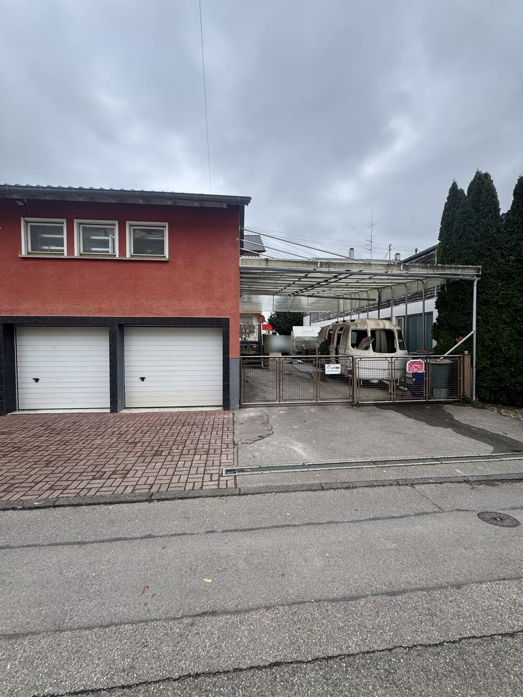

Faites comme chez vous ! Nous voulons que vous passiez un excellent séjour, c’est pourquoi nous avons réuni ici les informations les plus importantes. Pour toute question ou suggestion, n’hésitez pas à nous contacter – profitez bien de Fellbach !
Anita & Johannes
📄 Guide PDF (anglais)Arrivée & check-in
L’appartement se trouve dans le bâtiment arrière (Bruckstraße 22/1). L’accès en voiture, la place de parking et l’entrée se font par l’arrière, par le Bruckwiesenweg – et non par la Bruckstraße.
📍 Destination GPS : BruckwiesenwegComment nous trouver
- Suivez la Bruckstraße et tournez dans le Bruckwiesenweg au coin de la maison rouge (restaurant Da Patrizia).
- Suivez le Bruckwiesenweg jusqu’à ce qu’il tourne à gauche. Après le virage, vous verrez à gauche le bâtiment rouge avec deux portes de garage blanches (photo 1).
- À droite des garages se trouve un portail métallique avec auvent (photo 2). Parking : garez-vous sur la surface pavée devant la porte gauche du double garage (à côté du camping-car) – vous pouvez bloquer entièrement cette porte. La porte de garage de droite doit toujours rester libre.
- Le portail métallique est ouvert – passez simplement. Continuez à pied le long du chemin pavé à côté de la maison blanche, devant les bacs potagers, jusqu’à la porte d’entrée blanche avec les marches et l’auvent en verre (photos 3 & 4).
- Le clavier Yale se trouve en haut à droite de la porte d’entrée (photo 5) : touchez le clavier pour l’allumer → saisissez votre code personnel → validez avec le ✓ vert → abaissez la poignée. Vous trouverez le code dans l’appli Airbnb, dans votre voyage (instructions d’arrivée) ; il n’est valable que pendant votre réservation.
- Tout droit dans le couloir se trouve la porte avec le panneau « Air BnB » – c’est votre appartement (photo 6). La clé est sur la serrure à votre arrivée.


Le chemin en photos




Vue d’en haut


En bus & train : voir transports. L’arrêt de bus Cannstatter Platz est à quelques minutes à pied.
Wi-Fi
L’appartement & le règlement intérieur
- Il est interdit de fumer dans tout l’appartement.
- Pas de fêtes ni d’événements.
- Silence de 22 h à 7 h – merci d’être discrets aussi dans la cour et sur le chemin de la voiture.
Bon à savoir
- Chauffage & aération : réglez les radiateurs avec le thermostat (position 3 ≈ 20 °C). En hiver, merci d’aérer brièvement mais complètement (fenêtre grande ouverte pendant 5 minutes) plutôt que de la laisser entrouverte.
- Café : une machine Senseo est à votre disposition pour le café du matin. Nous laissons généralement quelques dosettes pour commencer – pour un séjour plus long, le mieux est d’en acheter un paquet en faisant vos courses (disponible dans tous les supermarchés).
- Déchets : vous pouvez simplement laisser vos déchets dans l’appartement à votre départ – nous nous en occupons.
- Le dimanche, tous les supermarchés sont fermés en Allemagne – faites vos courses le samedi.
Courses, boulangeries & restaurants
★ = note Google (nombre d’avis) issue de nos recherches – touchez « Carte » pour les notes et horaires actuels. Distances depuis l’appartement.
Supermarchés & droguerie


Boulangeries


Restaurants & bars


Nos conseils – rien que pour vous
Pour les familles
L’un des plus beaux zoos d’Allemagne, avec de nombreuses maisons d’animaux et serres – une belle journée même par temps froid ou pluvieux.
Piscine couverte avec toboggans, sauna et le nouveau monde de la jungle pour les tout-petits (ouvert à l’été 2026). La piscine extérieure est fermée en hiver.
Une boucle plate et accessible (env. 4 km) à travers les vignes – facile avec une poussette, avec vue sur Fellbach.
130 ans d’histoire automobile sur neuf étages – passionnant aussi pour les enfants et parfait par temps de pluie.
Bull Burgerhouse (★ 4,6) est à environ 50 m, la Trattoria Pane e Pino (★ 4,7) à environ 150 m.
Pour les couples
Le sentier viticole (env. 4,3 km) part de la Neue Kelter des vignerons de Fellbach (Kappelbergstraße 48) et traverse les vignes jusqu’au point de vue « Blick über Fellbach ». Le premier samedi de chaque mois, une dégustation ouverte y est proposée.
Cette chapelle néoclassique au-dessus des vignes offre l’une des plus belles vues sur la vallée du Neckar. La chapelle elle-même est fermée de novembre à mars – mais la promenade et la vue valent le détour toute l’année.
Eau minérale chaude dans des bassins intérieurs et extérieurs, plus sauna – merveilleusement relaxant, surtout en hiver.
Trattoria Pane e Pino (★ 4,7), Irodion (★ 4,6, grec, désormais dans l’historique Alte Kelter) ou tout simplement à côté chez Da Patrizia (★ 4,5).
Esslingen et sa vieille ville à colombages avec son château (env. 20 min), ou le château résidentiel de Ludwigsburg, l’un des plus grands châteaux baroques d’Allemagne (env. 25 min, visites guidées en hiver).
Pour les voyageurs solo & d’affaires
Depuis la gare de Fellbach, le S2 ou le S3 rejoint la gare centrale de Stuttgart en 12–15 minutes environ – Schlossplatz, Königstraße, la halle du marché et la Staatsgalerie sont ensuite accessibles à pied.
Deux incontournables pour les passionnés d’automobile, chacun se visite facilement en 2–3 heures. Tous deux sont fermés le lundi ; le musée Porsche est également fermé du 18 janvier au 1er février 2027 pour rénovation.
La première tour de télévision au monde construite en béton armé – idéale aussi après le travail : tous les jours 10 h–22 h, dernière entrée 21 h 30.
Boucle par le Kappelberg à travers vignes et forêt jusqu’à la tour panoramique – env. 13,7 km, environ 4 heures. En hiver, partez tôt (il fait nuit vers 17 h) et attention au verglas en forêt.
Maultaschen et Kässpätzle au Wirthshaus Zum Kuckuck (★ 4,4, 747 avis) – chaleureux, même pour dîner seul.
Événements à Fellbach & alentours
Mise à jour : 22/11/2026 · sans garantie – merci de vérifier auprès de l’organisateur avant de vous déplacer.
- 28/11–22/12/2026Marché de Noël de Fellbach
Autour de la Lutherkirche et de l’hôtel de ville, avec scène et animations pour enfants. Lun.–mer. 16 h–20 h, jeu.–dim. 12 h–20 h, entrée libre (fin prévue le 22/12).Centre de Fellbach - 25/11–23/12/2026Marché de Noël de Stuttgart
L’un des plus anciens et plus grands marchés de Noël d’Europe, env. 250 stands. Dim.–jeu. 11 h–21 h, ven. & sam. 11 h–22 h.Centre de Stuttgart · env. 15 min en S-Bahn - 24/11–22/12/2026Marché médiéval & de Noël d’Esslingen
Dim.–jeu. 11 h–20 h 30, ven. & sam. 11 h–21 h 30.Esslingen am Neckar · env. 20 min - 24/11–22/12/2026Marché de Noël baroque de Ludwigsburg
Env. 150 stands dans un décor baroque, tous les jours 11 h–21 h.Ludwigsburg · env. 25 min - jusqu’à début/mi-janv. 2027Christmas Garden à la Wilhelma
Parcours lumineux dans le parc historique, en soirée. Billets en ligne (christmas-garden.de).Stuttgart-Bad Cannstatt - chaque 1er samediDégustation ouverte – Fellbacher Weingärtner
Prochaines dates : 05/12/2026, 02/01, 06/02 et 06/03/2027.Neue Kelter, Kappelbergstraße 48, Fellbach - 20/01/2027 · 20 h« Huckleberry Finn » avec Herbert Knaup (en allemand)Schwabenlandhalle Fellbach
- 07/02/2027 · 19 hLe Lac des cygnes – Grand Classic BalletSchwabenlandhalle Fellbach
- 20–21/02/202729e salon du vin « Die Besten aus dem Remstal »
Env. 50 domaines viticoles en un week-end.Alte Kelter, Kelterweg 7, Fellbach - 13/03/2027 · 20 hAzzurro – revue italo-popSchwabenlandhalle Fellbach
- 20/03/2027Bobby & Max – pièce radiophonique en direct pour enfants, en allemand (13 h & 18 h)Schwabenlandhalle Fellbach
Se déplacer en bus & train
- Bus : arrêt Fellbach Cannstatter Platz (quelques minutes à pied) – bus vers la gare et ailleurs.
- S-Bahn : gare de Fellbach – S2 et S3 vers la gare centrale de Stuttgart (env. 12–15 min), l’aéroport/le parc des expositions et en direction de Schorndorf ou Backnang. Le moyen le plus simple pour aller à Stuttgart.
- Tramway U1 : en raison de travaux, à partir du 13/12/2026 la U1 a son terminus à Fellbach Schwabenlandhalle. Probablement de mars à juillet 2027, des bus de remplacement circuleront à la place de la U1 jusqu’à Bad Cannstatt.
Horaires et billets : applis VVS ou DB Navigator – qui indiquent aussi les travaux en cours. Le Deutschlandticket est valable dans tous les transports locaux.
🚗 Stuttgart est une zone à faibles émissions : les voitures ont besoin d’une vignette verte (« Umweltplakette »).
Calculateur d’itinéraire VVS ↗
Départ
Départ avant 11 h. Avant de partir, merci de :
Nous espérons que vous avez passé un excellent séjour ! Un avis sur Airbnb nous ferait très plaisir. ⭐
Contact & urgences
Le plus simple pour nous joindre : l’appli Airbnb ou par téléphone :
Numéros d’urgence
- Pompiers & SAMU : 112
- Police : 110
- Médecin de garde : 116 117
- Pharmacie de garde : aponet.de – recherche de pharmacie